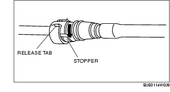
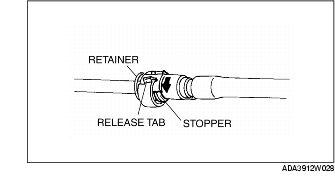
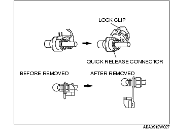
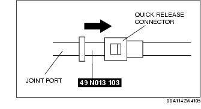
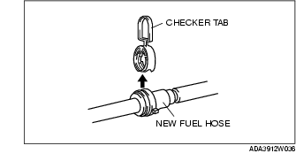
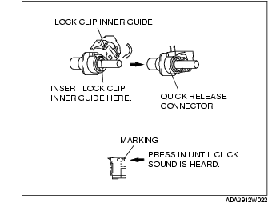

Quick release connector removal/installation [ZY]
- • Fuel is very flammable liquid. If fuel spills or leaks from the pressurized fuel system, it will cause serious injury or death and facility breakage. Fuel can also irritate skin and eyes. To prevent this, always complete the "Fuel Line Safety Procedure", while referring to the "BEFORE SERVICE PRECAUTION". (See BEFORE SERVICE PRECAUTION [ZY].)
- • If there is foreign material on the connecting area of the quick release connector, it might damage the connector or fuel pipe. To prevent this, disconnect the connector and clean the connecting area before connecting.
Quick Release Connector Type
-
• There are three types of quick release connectors. Verify the type and location, and install/remove properly.

Type A Removal
1. Follow "BEFORE SERVICE PRECAUTION" before performing any work operations to prevent fuel from spilling from the fuel system. (See BEFORE SERVICE PRECAUTION [ZY].)
- • The quick release connector may be damaged if the release tab is bent excessively. Do not expand the release tab over the stopper.
- • The quick release connector can be removed by pushing it to the joint port side to release the lock.
2. Rotate the release tab on the quick release connector to the stopper position.
At fuel pump (2 locations), at charcoal canister (1 location)

Other

- • After disconnecting the fuel hose, the retainer may be removed from the quick release connector. Take care not to loose the retainer.
3. Pull out the fuel hose straight from the fuel pipe and disconnect it.
At fuel pump (2 locations), at charcoal canister (1 location)

Other

4. Cover the disconnected quick release connector and fuel pipe with vinyl sheeting or a similar material to prevent it from scratches or dirt.

Type B Removal
-
• Applying excessive force to the pressed in areas of the fuel hoses could damage the fuel pipes resulting in fuel leakage. When removing the fuel hoses, temporarily support them against something so that no excessive force is applied to the pressed areas of the fuel hoses.

1. Follow "BEFORE SERVICE PRECAUTION" and remove dirt from the connecting surfaces before performing any work operations. (See BEFORE SERVICE PRECAUTION [ZY].)
2. Remove the look clip.

- • The quick release connector may be damaged if the release tab is bent excessively. Do not expand the release tab over the stopper.
- • The fuel hose may be removed easily by rotating the release tab white the fuel hose is slightly pressed to fuel pipe side.
3. Rotate the quick release connector release tab to the stopper position.

- • After disconnecting the fuel hose, the retainer may be removed from the quick release connector. Take care not to loose the retainer.
4. Pull out the fuel hose straight from the fuel pipe and remove it.

5. Cover the disconnected quick release connector and fuel pipe with vinyl sheeting or a similar material to prevent it from scratches or dirt.

Type C Removal
1. Follow " BEFORE SERVICE PRECAUTION" and remove dirt from the connecting surfaces before performing any work operations. (See BEFORE SERVICE PRECAUTION [ZY].)
2. Insert the SST into the quick release connector.

3. Pull out the fuel hose straight from the fuel pipe and disconnect it.
4. Cover the disconnected quick release connector and fuel pipe with vinyl sheeting or a similar material to prevent it from scratches or dirt.

Type A Installation
- • If the quick release connector O-ring is damaged or has slipped, replace the fuel hose.
- • A checker tab is integrated with the quick release connector for new fuel hoses and evaporative hoses. Remove the checker tab from the quick release connector after the connector is completely engaged with the fuel pipe.

Other

1. Inspect the fuel hose and fuel pipe sealing surface for damage and deformation.
2. Apply a small amount of clean engine oil to the sealing surface of the fuel pipe.
3. Reconnect the fuel hose straight to the fuel pipe until a click is heard.
- • If the quick release connector does not move at all, disconnect it, verify that the O-ring is not damaged or has not slipped, and then reconnect the quick release connector.
4. Lightly pull and push the quick release connector a few times by hand, and then verify that it can move 2.0-3.0 mm {0.08-0.12 in} and is connected securely.
5. Inspect all related parts by performing "AFTER SERVICE PRECAUTION". (See AFTER SERVICE PRECAUTION [ZY].)
Type B Installation
1. Inspect the fuel hose and fuel pipe sealing surface for damage and deformation.
2. Apply a small amount of clean engine oil to the sealing surface of the fuel pipe.
3. Reconnect the fuel hose straight to the fuel pipe until a click is heard.
- • If the quick release connector does not move at all, disconnect it and verify that the O-ring is not damaged or has slipped, then reconnect the quick release connector.
4. Lightly pull and push the quick release connector a few times by hand and verify that it can move 2.0-3.0 mm (0.08-0.11 in) and it is connected securely.
5. Install the lock clip using the following procedure.
-
(1) Insert the inner guide as shown in the figure.

- (2) Push the lock clip from the back of the marking until a click is heard to lock it.
6. Inspect all related parts by performing "AFTER SERVICE PRECAUTION". (See AFTER SERVICE PRECAUTION [ZY])
Type C Installation
- • If the quick release connector O-ring is damaged or has slipped, replace the fuel hose.
-
• A checker tab is integrated with the quick release connector for new fuel hoses and evaporative hoses. Remove the checker tab from the quick release connector after the connector is completely engaged with the fuel pipe.

1. Inspect the fuel hose and fuel pipe sealing surface for damage and deformation.
2. Reconnect the fuel hose straight to the fuel pipe until a click is heard.
3. Lightly pull and push the quick release connector a few times by hand, and then verify that it is connected securely.
4. Inspect all related parts by performing "AFTER SERVICE PRECAUTION". (See AFTER SERVICE PRECAUTION [ZY].)